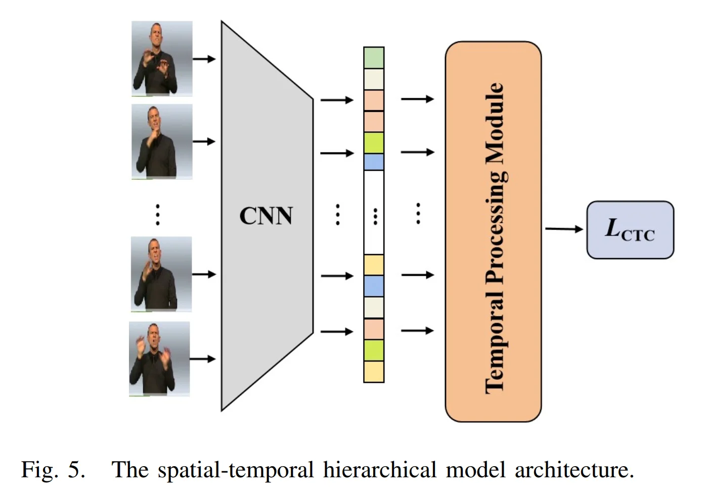
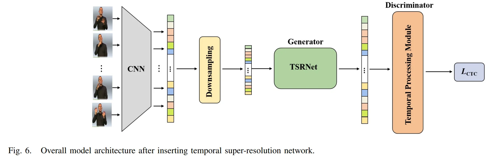
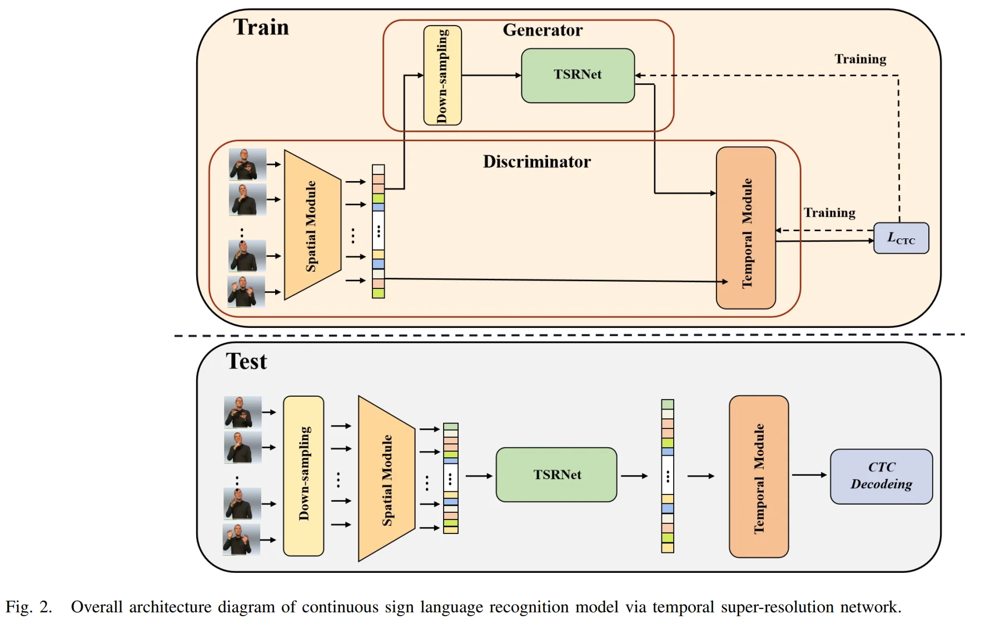
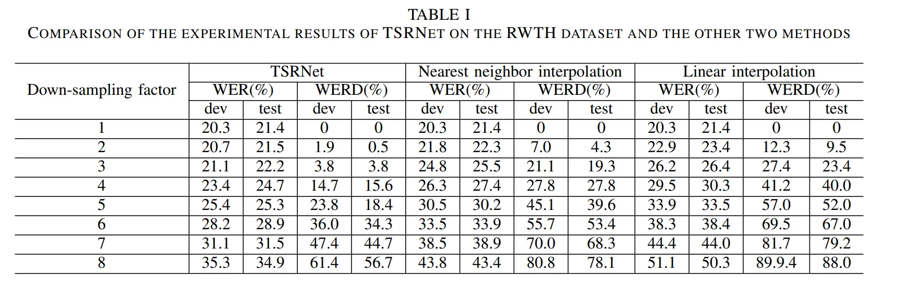
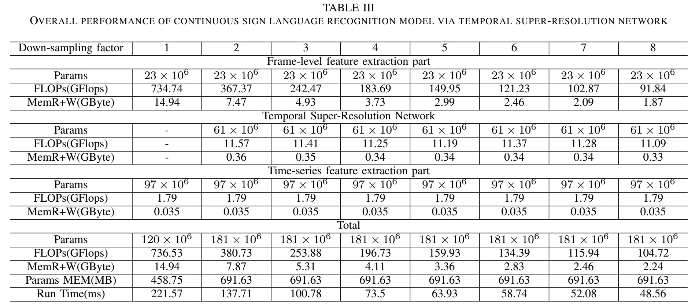

Continuous Sign Language Recognition viaTemporal Super-Resolution Network¶
essay: https://arxiv.org/pdf/2207.00928.pdf
I. Introduction¶
1.1 Core Idea¶
- data is reconstructed into a dense feature sequence
- three parts: frame-level feature extraction, time-series feature extraction and TSRNet,
- model is trained with the self-generating adversarial training method
- The training method regards the TSRNet as the generator, and the frame-level processing part and the temporal processing part as the discriminator.
- proposes word error rate deviation(WERD, 词错误率偏差), which takes the error rate between the estimated word error rate (WER) and the reference WER obtained by the reconstructed frame-level feature sequence and the complete original frame-level feature sequence as the WERD.
1.2 Core Idea¶
We found that:
1) The images between adjacent frames have high similarity in content, as shown in Figure 1, after feature extraction of frame-level images, adjacent feature vectors in the generated autocorrelation matrix have high similarity.
2) In the spatial-temporal hierarchical model, most of the computation of the model is concentrated on the extraction of video frame-level features, and the feature information extraction for each frame of the video is independent of each other.
Therefore, this paper reduces the computational complexity of the model by reconstructing the sparse data into dense feature sequences while keeping the original spatial-temporal hierarchical model unchanged.
II. Methodology¶
2.1 Temporal Super-Resolution Network¶
Frame-level feature extraction + TSRNet + time-series feature extraction
(1) Frame-level feature extractions¶
\(V = (x_1, x_2, ..., x_T) = \{x_{t}|_{1}^{T}\in R^{T\times c\times h\times w}\}\)
containing \(T\) frame, where \(x_t\) is the \(t\)-th frame image in the video, \(h \times w\) is the size of \(x_t\), and \(c\) is the number of channels.
\(f_1 = F_s(V) \in R^{T\times c_1}\)
\(F_s\) is the frame-level feature extraction module. \(c_1\) is the number of channels after feature extraction
\(f_1\) is dense feature sequence, then:
(2) Down sample¶
\(f_1\) is down-sampled by \(n\) times to obtain a sparse frame-level feature sequence, and then the time dimension and the channel dimension are exchanged to obtain the feature sequence \(f_2 \in R^{c_1 \times T_1}\), where \(T_1 = T/n\).
\(f_2\) is the sparse feature sequence, the input of the TSRNet.
(3) TSRNet¶
(1) In the detail descriptor branch
\(f_3 = F_{1DCNN-ReLU}(f_2) \in R^{c_2 \times T_1}\)
\(f_{3}^{\prime} = F_{Res_{m}}(f_3) \in R^{c_2 \times T_1}\)
\(m\) is the number of 1D-Resblocks
then upsample n times
\(f_4 = F_{Upsample}(f_{3}^{\prime}) \in R^{c_3 \times T}\)
\(c_3\) is the number of channels after the up-dimension, \(T\) is the original video frame length.
then:
\(f_{4}^{\prime} = F_{Res_{k}}(f_{4}) \in R^{c_3 \times T}\)
then subjected to a 1D-CNN for dimensionality reduction, so that the number of channels is restored to be consistent with the input feature sequence, and then batch normalizationis performed to obtain a dense feature sequence:
\(f_5 = BN(1D-CNN(f_{4}^{\prime}))\in R^{c_1 \times T}\)
(2) In the rough descriptor branch
only the nearest neighbor interpolation Fnearest is used for the sparse feature sequence f2 to up-sample n times in the time dimension:
\(f_{2}^{\prime} = F_{nearest}(f_2) \in R^{c_1 \times T}\)
(3) Fusion
Finally, the dense feature sequences \(f_2^{\prime}\) and \(f_5\) obtained by the two branches are fused, and the final output dense feature sequence is obtained through the activation function
\(f_{Result} = \sigma(f_{2}^{\prime} + f_5)\)
(4) Appendix
1D-Resblock This paper introduces the ResBlock structure into our model. Because we deal with 1D temporal data, we use 1D depth-wise convolution in 1D-Resblock
\(y = \sigma(F_d(x) + x)\)
2.2 Connectionist Temporal Classification¶
the label of each frame is:
\(\pi = (\pi_1, \pi_2, ..., \pi_T)\), where \(\pi_t \in \text{vocab}\cup \{-\}\)
the posterior probability of the label is:
\(p(\pi | V) = \prod_{t=1}^{T} p(\pi_t | V)\)
the sum of the occurrence probabilities of all corresponding paths:
\(p(s|V) = \sum_{\pi \in B^{-1}(s)} p(\pi | V)\)
where:
\(B^{-1}(s) = \{ \pi | B(\pi) = s \}\)
2.3 Traning Method: GAN¶
本文提出的TSRNet属于超分辨率模型。超分辨率模型常用的训练方法是采用L1损失或L2损失作为损失函数，这类函数通过判断估计值与参考值之间的距离来反映估计值的准确性，其考量的是单一数据层面的差距[37][38]。然而，本文旨在重构特征向量。若仅考虑数据间的差距，结果必然难以令人满意。因为每个特征向量都是一个整体，它代表了集成的高维信息，且经过多次特征提取后其数值可能变得极小，因此此时需要考虑向量之间的相似性。
本文借鉴了生成对抗网络（GAN）[39]的训练方法，将其应用于我们的模型训练中，并提出了一种自生成对抗训练方法来训练时序超分辨率网络，这显著提高了最终的误差率。下面将详细描述自生成对抗训练方法的训练和测试过程。
During the training process, we use the selfgenerating adversarial training method to train the temporal super-resolution network. We consider the temporal superresolution network as the generator and the spatial-temporal hierarchical model as the discriminator.
首先，将原始手语视频输入时空分层模型的帧级特征提取部分，获取frame-level feature sequence，并将down-sampled data作为时序超分辨率网络的输入来训练网络。训练分为两个步骤：第一步是训练时空分层模型，第二步是训练TSRNet。
第一步：训练时空分层模型，如图5所示。原始手语视频数据作为CNN的输入以提取帧级特征，随后通过时序处理模块获得处理后的时序特征。最后，以标注的labled video-level phrases 作为标签，使用CTC Loss 进行训练，并将最终得到的模型用作判别器。

第二步：训练TSRNet，如图6所示。首先，将TSRNet插入时空分层模型的 frame-level feature extractor 与 temporal feature extractor 之间，冻结第一步中训练好的时空分层模型参数，仅训练TSRNet的参数。随后，以原始手语视频作为输入，通过时空分层模型的帧级特征提取部分获取帧级特征序列，并根据设定的下采样倍数对该序列进行稀疏化处理。接着，将稀疏化的帧级特征序列输入时序超分辨率网络进行重建，得到重建后的密集帧级特征序列。最后，将该序列输入时空分层模型的时间序列处理部分，获得最终的时间序列特征，并依据短语标注使用CTC损失进行训练。


2.4 Testing Process¶
测试阶段：与训练阶段的不同之处在于下采样的位置。首先，将输入视频数据直接进行下采样以获得稀疏视频数据，并将其输入时空分层模型的frame-level feature extractor，从而获取帧级特征。接着，通过TSRNet进行重建，得到密集的帧级特征序列。随后，将生成的密集帧级特征序列输入时空分层模型的temporal feature extractor。最后，针对所得到的时间序列特征，通过CTC解码获得最终的识别结果，如图2中测试部分所示。
III. Performance¶
3.1 Accuracy¶
基本在 20~30% 左右

3.2 Model size and latency¶
大小介于 400~700MB，算力要求 100~700 GFLOPS
